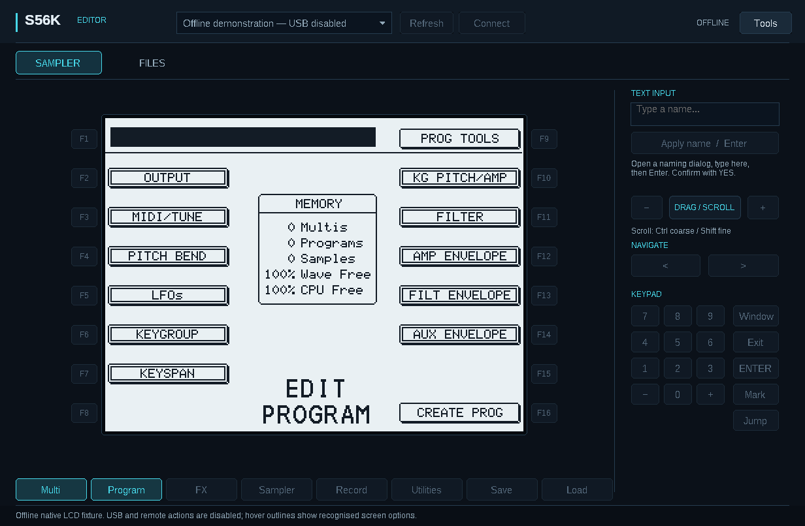
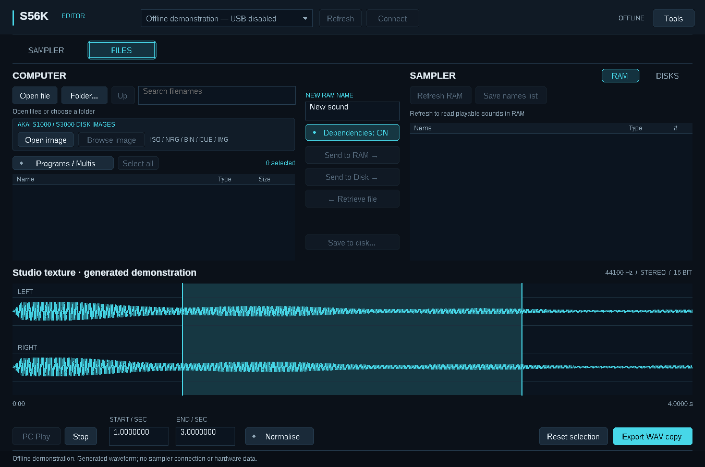
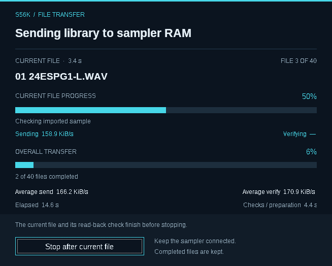
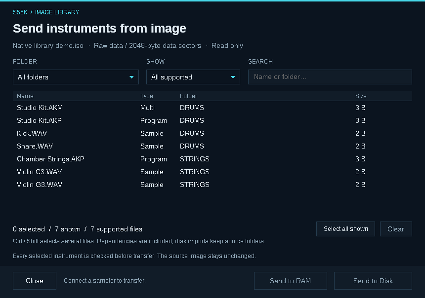
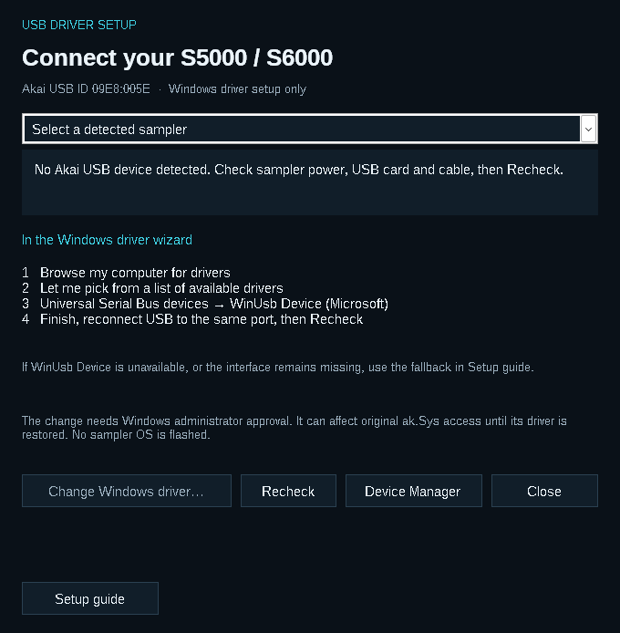

Bring your sampler's controls, instruments and disk libraries into one desktop workspace. The Editor operates the sampler over its IB-S56USB expansion card. It works with stock OS 2.14 and S56K Expanded Edition; installing the Editor does not require a firmware update.
Download the Windows ZIP from Releases and extract all files into a new folder.
Turn on the sampler and connect its USB card to the PC. Close ak.Sys, the Firmware Updater and any other app using that sampler.
Open S56K-Editor.exe. Select the sampler, then choose Connect.
If Windows has not assigned a suitable driver, open Tools → USB driver setup… while disconnected. Follow the USB setup guide.
The release is unsigned. Check that your download came from the project release page and matches its supplied checksum. Do not disable Windows security or driver-signature enforcement.
SAMPLER controls the instrument. FILES manages your computer library, sampler RAM and sampler disks. You can browse local files and images without a USB connection.
Your sampler, on screen

Sampler workspace with an example program screen
Click a recognised option on the LCD, or use the F buttons beside it. The bottom mode buttons follow the current sampler page:
Multi · Program · FX · Sampler · Record · Utilities · Save · Load
Changes made on the front panel appear in the Editor too. The LCD updates automatically while the connected Sampler page is visible and idle; transfers and dialogs temporarily pause it. There is no Live switch to turn on.
Action
How
Change a value
Scroll over the LCD or drag/scroll the DATA control.
Fine or coarse adjustment
Hold Shift for fine changes or Ctrl for coarse changes.
Enter a name
Open a naming dialog, type in TEXT INPUT, then press Enter or Apply name / Enter. Confirm with YES on the sampler screen.
Save a screenshot
Tools → Save LCD image… saves the latest received LCD as a BMP.
Use panel shortcuts
F1–F12; Shift+F1–F8 for F9–F16; digits, arrows, +/−, Enter and Escape.
Names use up to 20 supported printable characters. Applying a name is enabled only for recognised naming dialogs. Text entry replaces the whole name; you still confirm the result yourself.
The LCD keeps the sampler's native resolution. Clicking the display works for recognised soft-key areas rather than turning every pixel into a new control. The Editor does not expose Undo or user-key buttons in this preview.
One Files page, two destinations

Files workspace with computer and sampler panes
The COMPUTER pane is on the left. Use Open file or Folder…, search by filename, and double-click a file to inspect it. On the right, choose the sampler's RAM or DISKS.
Destination
What happens
What happens next
Send to RAM →
Loads samples, programs and Multis into working memory, ready to play.
Audition the sound, then save it to disk when you want to keep it.
Send to Disk →
Writes files to the selected sampler disk folder.
Load the saved instrument into RAM when you want to play it.
Sending to RAM is not a disk backup. Sending to disk does not load the library into RAM. Unsaved RAM contents are lost when the sampler is switched off.
Send a program, Multi or batch
Open the PC folder containing the AKP programs, AKM Multis and their WAV samples. Keep their associated files together.
Turn on Programs / Multis to hide individual samples. Select instruments with Ctrl/Shift-click, Select all, or Ctrl+A.
Leave Dependencies: ON to include the associated files. Choose Send to RAM →, or browse a writable sampler disk folder and choose Send to Disk →.
Read the transfer review, including conversion notices and renamed files. Choose Start transfer.
Audition the result. If it was sent to RAM, saving remains a separate action.
The filter hides sample rows; it does not remove samples needed by a selected instrument. AKP and AKM files contain settings and references—the audio lives in separate WAV files.
With dependencies on, the Editor prepares the batch before uploading. Shared matching files within that batch are sent once. Different files needing the same destination name receive unique names where the references can be resolved safely. Missing or genuinely ambiguous dependencies stop preparation.
Existing RAM sounds are protected. A source-file conflict with an existing RAM name can stop a transfer. With Dependencies: OFF, references may reuse sounds already in RAM by name; their contents are not compared. Use this option only when those sounds are already the correct ones.
Progress, verification and stopping

Transfer window with current-file and overall progress
The transfer window shows current-file progress, overall progress, and the current stage. Sending and read-back verification have separate speed measurements; preparation is additional work. Rates are useful data in KiB/s, not the USB link's advertised signalling speed.
Tools → Verify uploads by reading back is on by default. Turning it off skips the full return transfer and comparison, reducing the time spent verifying. Source validation and sampler acceptance checks remain, but uploaded contents are not independently compared with a returned copy. The choice is remembered; set it before starting a job.
Stop after current file completes the active file and its enabled verification before stopping. Completed files remain in their destination. It is not an undo operation, and there is no automatic resume or rollback.
Retrieve an instrument
Select a sound in sampler RAM, enable Dependencies: ON, and choose ← Retrieve file. Select a new PC folder. The Editor retrieves the instrument and its associated files as separate WAV/AKP/AKM files; it refuses existing destination files.
Keep the sampler idle during retrieval. This is a sequence of reads, not a single instant snapshot. Keep the resulting files together.
Open your Akai disk-image library

Image library browser with volume and instrument filters
Below the local file controls, AKAI S1000 / S3000 DISK IMAGES contains:
Open image — choose a new ISO, NRG, BIN, CUE or IMG library.
Browse image — return to the image already open.
The file picker remembers the last image folder, including after cancellation or an app restart. Computer files and save destinations have separate remembered locations.
Choose Open image. If a BIN has a CUE sheet, keep both files together and open the CUE.
Select a volume or folder, filter by type, and search for instruments. Use Ctrl/Shift-click or Select all shown. Selection is retained when filters change; Clear removes all selections.
Choose Send to RAM or Send to Disk. Image instruments include their dependencies automatically.
Read Image notices and the transfer review before starting. A readable catalogue can still contain files or dependencies that cannot be imported.
For image-to-disk transfers, first select the destination in the main DISKS pane, then return through Browse image. The Editor creates an Import YYYYMMDD-HHMMSS folder with subfolders for source volumes. This route does not require the entire library to fit in sample RAM.
The source image is read-only. Conversion happens on the PC as files are prepared; current transfers do not extract a prepared library into AppData. Keep the source files unchanged during the job. See supported formats and limits for container and conversion details.
Work with the sampler's disks
Choose DISKS, select a volume and open a folder. Up, Root and Refresh navigate or reread that location. This browser is independent of the sampler's current front-panel disk selection.
Action
Use it for
Create folder
Create the name entered in NEW FOLDER NAME on a writable disk.
Send to Disk →
Copy selected PC files or an instrument batch into the chosen destination.
← Retrieve file
Copy one selected sampler-disk file to a new PC filename.
Load to RAM
Ask the sampler to load the selected WAV, AKP or AKM, with dependencies when enabled.
Save to disk… / Save RAM here
Select a RAM object, choose Save to disk, navigate to the destination and confirm Save RAM here.
Saving an instrument with dependencies needs an empty folder. Create a new folder first. Existing destination files are not silently overwritten. Read-only media can be browsed and retrieved.
A stopped or failed disk operation can leave completed files, partial files or new folders. Inspect the destination before retrying. Free-space estimates cannot account for every allocation or media condition.
Waveform inspection on the PC
Open a WAV to inspect its waveform and duration. PC Play uses the computer's audio output. Set the selection start/end and optional Normalise, then choose Export WAV copy to create an edited PCM16 copy.
Send to RAM sends the whole selected WAV. To upload your waveform edit, select the exported copy. USB does not turn the sampler into an audio interface.
Tools, explained
Command
Purpose
USB driver setup…
Inspect the Akai device's Windows driver while disconnected, with an option to open its Windows driver wizard.
Save troubleshooting log…
Save this session's connection, error and transfer details to a local text file. It can include filenames and paths, but no sample audio. Review it before sharing. Nothing is uploaded automatically.
Save LCD image…
Save the most recently received sampler screen as a BMP.
Verify uploads by reading back
Enable or disable full returned-content comparisons for uploads.
Review legacy import folders…
Appears only if early Editor versions left an import folder. Opens it in Explorer so you can review it yourself. Nothing is deleted automatically.
Try a small instrument first and listen to its pitch, stereo image, release and loops. Keep a backup of your work, read any conversion notices, and check available RAM or disk space. This preview does not promise compatibility with every library or hardware configuration.
The Editor requires an IB-S56USB card in the S5000 or S6000 and Microsoft WinUSB assigned to that device in Windows. Installing ak.Sys is not required.
If your sampler already connects
Keep the working driver. Close ak.Sys, the Firmware Updater and any other USB utility before connecting in the Editor. Only one application should use the sampler at a time.
If Windows chose the wrong driver
Open Tools → USB driver setup… while the Editor is disconnected. The assistant can identify the Akai device even when its current driver is missing or unsuitable.

USB setup assistant showing device detection and the Windows driver-selection steps
Turn on the sampler, connect its USB card to the PC and choose Recheck.
Select your sampler if more than one is listed. Check the Akai USB identity: VID 09E8, PID 005E.
Choose Change Windows driver…. Windows may ask for administrator approval through UAC.
In Windows, choose Browse my computer for drivers → Let me pick from a list of available drivers.
If offered, select Universal Serial Bus devices → WinUsb Device (Microsoft), then finish the wizard.
Reconnect USB to the same PC port if needed. Choose Recheck, close the assistant and Connect in the Editor.
The assistant targets the selected Akai device. You still choose and confirm the driver in Windows; it does not silently install one. Assign a driver only to the correctly identified sampler.
The “Have Disk…” option
If your Windows installation includes winusb.inf, the assistant displays its actual location. You can select that file using Have Disk…, then choose Microsoft's WinUsb Device. The file and this option are not available on every Windows installation.
If WinUSB is not offered
The fallback is Zadig from its official site. Select only the Akai device with USB ID 09E8:005E, and select WinUSB as the driver. This is also a fallback when WinUSB appears assigned but no usable USB interface is registered.
Do not disable driver-signature enforcement. Changing the association can affect original ak.Sys access until its previous driver is restored.
What the status means
Status
Next step
No Akai device detected
Check sampler power, installed USB card, cable and PC port; choose Recheck. A driver choice cannot fix an absent device.
No driver / another driver assigned
Use Change Windows driver and the steps above.
WinUSB assigned, no interface registered
Consult the fallback above; a driver name alone does not establish a usable connection.
WinUSB and interface present
Close the assistant and Connect. This performs the actual communication check.
Windows handles the final driver installation. The new assistant's real UAC and driver-binding flow still needs broader hardware testing; the app's software checks do not guarantee every Windows configuration will offer the same choices.
Driver setup does not flash the sampler's OS. The firmware updater remains a separate application.
Opening a file or image does not guarantee that every item inside it can be transferred. The Editor checks the selected sounds and their dependencies before uploading and reports unsupported or ambiguous content.
Computer files
File
Send to RAM
Send to sampler disk
WAV
Supported mono/stereo audio is prepared as PCM16. Recognised Akai settings are preserved; unsafe or unsupported metadata is refused.
Copies the original file bytes; this does not guarantee the sampler can load every WAV encoding.
AKP
Native S5000/S6000 programs, with associated WAVs when Dependencies is on.
Program and associated files when requested.
AKM
Native S5000/S6000 Multis, with associated programs and samples when Dependencies is on.
Multi and associated files when requested.
Other files
Not supported as playable RAM objects.
Individual exact file copies may be possible; no promise of sampler compatibility.
AKP and AKM files do not contain their sample audio. Keep associated files together in the same PC folder for dependency discovery.
WAV details
PC waveform input accepts mono/stereo PCM8, PCM16, PCM24, PCM32 or float32, including equivalent extensible headers. Compressed and surround WAVs are not supported.
RAM preparation uses the original sample rate when representable, from 1 to 65,535 Hz. It does not resample the audio.
Generic WAV loop import supports an integer root note and one forward loop with sufficient audio after the loop end. Fractional tuning/loop offsets and repeat counts are not supported by that conversion path.
Recognised native Akai WAV metadata uses its own checks and is not treated as generic WAV metadata. Unrecognised native layouts are refused rather than silently discarded.
PC waveform selection and normalisation apply to Export WAV copy. Sending to RAM uses the whole selected source file.
Library images
Container
Supported layouts
ISO / BIN / IMG
Raw 2,048-byte data sectors, or validated 2,352-byte Mode 1 / Mode 2 Form 1 sectors. The extension alone does not identify the disc contents.
CUE + BIN
One supported data track in one local BINARY file. Includes supported 2,336-byte Mode 2 Form 1 layouts. Keep both files together and open the CUE.
NRG
Supported Nero v1/v2 DAO/TAO containers with one validated data track.
Supported mixed audio/data layouts import only their validated data track. Audio-only discs, ambiguous data-track choices, multisession, Form 2 and subchannel-bearing layouts remain unsupported.
The reader supports known S1000/S3000 program and sample records in Akai volumes, including supported CD3000 layouts. It also browses supported native WAV/AKP/AKM files in ISO9660/Joliet folders.
A firmware BIN is not a library image. The Editor does not install firmware.
Legacy conversion
The Editor prepares supported legacy programs and samples into S5000/S6000 AKP/WAV files. It retains supported settings and reports conversions that cannot preserve a source feature. Listen to the result, particularly tuning, envelopes, release behaviour and loops.
Known limits include:
Legacy Multis, effects records, drum settings, cue/take lists, direct-to-disk recordings and legacy OS files are not imported as playable instruments by this workflow.
Active finite-loop dwell and multiple-loop behaviour that cannot be represented safely remain unsupported.
Missing sample data, malformed active ranges and unresolved references remain errors.
Equivalent sample copies can be reused within a batch only when their complete prepared content and settings agree. Similar names or identical audio alone are not enough.
Different sounds with the same name are given unique destination names only when their program references can be resolved. Truly ambiguous source references stop preparation.
A disc can have readable volumes alongside skipped or damaged parts. Read Image notices and the transfer review. Missing source data cannot be recreated by the Editor.
Size and destination limits
Limit
Meaning
WAV file input: 256 MiB
Per source WAV; decoded working audio is limited to 512 MiB.
Disk upload: smaller than 256 MiB
Per individual nonempty file, not the total library.
AKP/AKM: 1 MiB
Per parameter file.
RAM transfers
Must fit the sampler's available sample memory. Program/object memory can also run out.
New RAM names
1–20 printable ASCII characters, excluding reserved filename characters, leading/trailing spaces and a trailing dot.
Image-to-disk batches can exceed sample RAM because their files are written to disk without loading the complete library into RAM. Capacity estimates still depend on media condition, free space and filesystem overhead.
Release scope
This preview combines remote front-panel operation, PC waveform inspection, instrument transfers, sampler-disk management and supported legacy-image import. Dedicated graphical keygroup/effects editors, an indexed library and automatic loop finding are not included.
Windows 11 on Intel/AMD x64 with an IB-S56USB-equipped S5000/S6000 is the target configuration. Stock OS 2.14 and S56K Expanded Edition are the initial OS targets. Other operating systems, ARM Windows and every sampler expansion/media combination have not been established as supported.
Earlier development builds have been used with sampler hardware for transfers and selected legacy instruments. That experience does not establish every library or hardware combination. The new USB driver assistant has software and offline interface checks; Windows UAC and actual driver reassignment still need broader testing on real PCs.
04 / S56K EDITOR
Troubleshooting
The sampler is missing or Connect fails
Close ak.Sys, the Firmware Updater and other USB tools. Check the sampler's power, IB-S56USB card, cable and PC port. In the disconnected Editor, open Tools → USB driver setup… and follow the USB guide. A working driver does not need reinstalling.
The display is not updating
Open SAMPLER and keep the Editor visible. Updates pause during transfers, dialogs, active control gestures and when the window is minimised. A recoverable display-read error is retried automatically after a short delay. A lost USB connection still requires reconnecting.
The display uses the sampler's native LCD resolution. Tools → Save LCD image… saves its latest received frame; it is not a higher-resolution render.
A program says a sample is missing
A file on the PC is different from a sound already loaded in sampler RAM. Enable Dependencies: ON and keep the program and associated WAVs together in the same PC folder. Multis also need their AKP programs. With dependencies off, the referenced sounds must already be in RAM under the expected names.
For image imports, read the notices and dependency error. The image may contain multiple different candidates or genuinely missing data. Renaming a source at random will not repair its references.
A transfer reports an existing or ambiguous name
Existing sampler contents are protected against silent replacement. Use a new destination folder, a different valid RAM name, or a sampler session without conflicting objects.
Within a batch, matching shared files can be combined and resolvable different-content collisions receive unique names. Multiple source samples with the same reference name but different prepared content remain ambiguous. That is different from several programs correctly sharing one sample.
A legacy image opens, but an instrument cannot be sent
Opening the catalogue only establishes that its directory can be read. Preparation also checks sample data, program settings, loops and dependencies. Read the exact error and format limits. An incomplete or damaged image needs an intact copy; unsupported content is not silently converted with missing settings.
For BIN/CUE libraries, keep the files together and open the CUE. Do not rename an unsupported file extension to make it appear supported.
Transfers seem slow
The original USB hardware limits performance. A library of many small files also needs more checks than one large WAV.
The progress window separates Sending, Verifying, and Checks / preparation. With Tools → Verify uploads by reading back on, each uploaded file is also returned for comparison. Turning it off can reduce total time, but removes that returned-content comparison. It does not increase the underlying sending rate.
I stopped a transfer, but some sounds remain
Stop after current file completes the active file before stopping. Completed files stay in RAM or on disk. A failed operation may also leave partial objects/files or new folders. Inspect the destination and log before retrying; there is no automatic rollback or resume.
My waveform edit was not sent
Selection and Normalise affect Export WAV copy. Export the edit, select that new WAV and send it. Send to RAM uses the whole selected file. PC Play plays through the PC's audio output.
What are the old import folders?
Early versions created prepared-instrument folders under %LOCALAPPDATA%\S56K Editor\Imported Images. Current image transfers do not create or use them.
If that location exists, Tools → Review legacy import folders… opens it in Explorer. Keep or move anything you need, then remove unwanted files yourself. The Editor never deletes them automatically.
How do I check the download?
Use the checksum file attached beside the ZIP on the release page. In PowerShell, run this against the ZIP you downloaded, adjusting the path if needed:
Its Hash must match the supplied ZIP checksum. SHA256SUMS.txt inside the extracted package covers the individual files. A checksum confirms matching bytes, not universal compatibility or a guarantee against bugs.
Reporting a problem
Save Tools → Save troubleshooting log… after the failure.
Note the Editor version, sampler model/OS, Windows version and whether you were using RAM, disk or an image.
Describe the steps and include the exact error or a screenshot. For image issues, include the container type and affected item name if you can share them.
Review the log before sharing: it can contain local paths and filenames. Do not upload sample audio, complete commercial libraries or other material you do not have permission to share.
The log contains no sample audio and is never uploaded automatically. Report issues at S56K Editor issues.